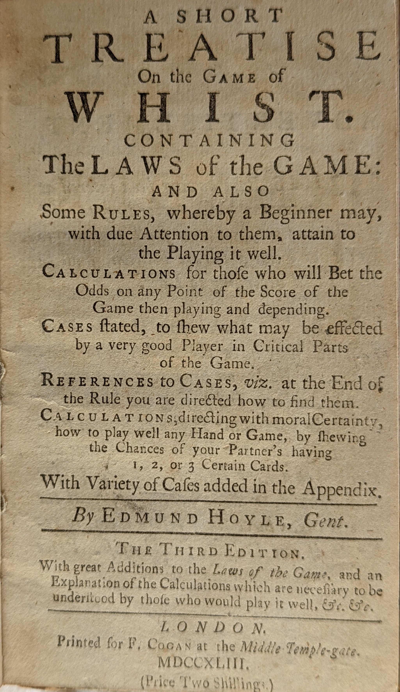

A Descriptive Bibliography of Edmond Hoyle
Copyright © 2014-26 by David Levy
(page updated 2026-01-30)User Guide
Whist.3
A Short Treatise on the Game of Whist, printed for F. Cogan, third London edition, 1743.
 |
Title: | A SHORT | TREATISE | On the Game of | WHIST. | CONTAINING | The LAWS of the GAME: | AND ALSO | Some Rules, whereby a Beginner may, | with due Attention to them, attain to | the Playing it well. | Calculations for thoſe who will Bet the | Odds on any Point of the Score of the | Game then playing and depending. | Cases ſtated, to ſhew what may be effected | by a very good Player in Critical Parts | of the Game. | References to Cases, viz. at the End of | the Rule you are directed how to find them. | Calculations, directing with moral Certainty, | how to play well any Hand or Game, by ſhewing | the Chances of your Partner's having | 1, 2, or 3 Certain Cards. | With Variety of Caſes added in the Appendix. | [rule] | By Edmund Hoyle, Gent. | [rule] | The Third Edition. | With great Additions to the Laws of the Game, and an | Explanation of the Calculations which are neceſſary to be | underſtood by thoſe who would play it well, &c. &c. | [rule] | LONDON. | Printed for F. Cogan at the Middle-Temple-gate. | MDCCXLIII. | (Price Two Shillings.) |
| Collation: | 12o: A–D12 E4 [$½ (−A2,B2) signed; signing B4 as B5]; 52 leaves, pp. [8 ] [1] 2–96 |
| Contents: | Signature (Page) Reference | Contents | Signature (Page) Reference | Running Titles |
| A1r | blank | |||
| A1v | ‘[headpiece] | TO THE | READER. | [...] | [autograph of Edmond Hoyle]’ | |||
| A2r | title | |||
| A2v | Advertisement | |||
| A3r–A4v | ‘THE | CONTENTS.e | [...]’ | A3r–A4v | ‘The CONTENTS.’ | |
| A5r–E4v (1–96) | ‘[headpiece] | A SHORT | TREATISE | On the GAME of | WHIST. | [...]’ | A5v–E4r (2–95) | ‘A ſhort Treatise on | the Game of Whist.’ | |
| E4v (96) | ‘A ſhort Treatise &c.’ |
| Catchwords: | A6v(4) Second [2d.] |
| Publisher: | Francis Cogan |
| Printer: | Charles Jephson (ornaments) |
| Notices: | 1743-03-18 Daily Advertiser: "This day is publish'd, in a neat pocket size, done up in fine gold emboss'd paper, and gilt on the leaves, price 2s. the third edition (with great additions to the laws of the game, and an explanation of the calculations which are necessary to be understood by those who would play it well, &c.)..." |
| Notices: | 1743-03 Gentleman's Magazine: (Google) 1743-03 The Scots Magazine: (Google) |
| Price: | 2s. (title, advertisement) |
| References: | ESTC T87540, Horr 644, Jessel 771, Marshall s7 no.8 p144 (1889-08-24), Rather 6 |
| Copies Seen: | L [7918.a.100] (ECCO) (Google) (A8 signed as ‘B2’); O [Jessel f.536]; Levy [1250] (A8 signed as ‘B2’); Levy [1821]; Stigler |
| Other Copies: | Sings; CaOTU [B-10 08146]; TNJ; Vi [GV1277.H89 1743] |
| Notes: | The type used for A12 was originally used for Whist.1.2 where it was imposed in sixes as A-B6. There are numerous changes in the press for this book such as the signing and pagination. Jephson initially forgot to remove the signature ‘B2’ from what became A8 when the sheet was reimposed in twelves, explaining a variant signing error. Some type was left standing and used to print Whist.4. In most copies, chain lines in gathering E are vertical. |